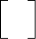
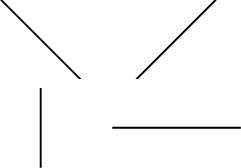
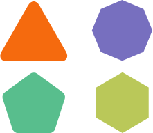

Draw Shapes
The Shape control allows you to draw various shapes in a report.
To add a shape to a report, drag the Shape item from the Toolbox onto the report's area.

Click a control's smart tag and use the Shape property to select the shape type. You can also choose the shape type in the Toolbar's Shape Tools contextual tab.

The smart tag provides the following main properties common to all shape types:
- Fill Color - specifies the the shape's color.
- Stretch - specifies whether to stretch a shape to fill its client rectangle area when it is rotated.
- Line Width - specifies the width of the line used to draw the shape.
- Angle - specifies the shape's rotation angle.
Each shape type provides its own specific set of properties which are detailed below.
Arrow
The image below illustrates the Arrow type's shape.
This shape type has the following additional properties:
- Fillet - specifies how the shape's corners are rounded (as a percentage). This value should be between 0 and 100.
- Arrow Height - specifies the arrow's relative height (as a percentage). This value should be between 0 and 100.
- Arrow Width - specifies the arrow's relative width (as a percentage). This value should be between 0 and 100.
Brace
The image below illustrates the Brace type's shape.

Use the following properties to set up a brace:
- Tip's Length - specify the length of a brace's tip.
- Fillet - specifies how the shape's corners are rounded (as a percentage). This value should be between 0 and 100.
- Tail's Length specify the length of a brace's tail.
Bracket
The following image demonstrates the Bracket type's shape:

The Tip's Length property is specific to this shape type and defines the length of a bracket's tip.
Cross
The image below shows the Cross type's shape.

This shape type has the following properties:
- Fillet - specifies how the shape's corners are rounded (as a percentage). This value should be between 0 and 100.
- Horizontal Line Height - specifies the relative width of a cross's horizontal line (as a percentage). This value should be between 0 and 100.
- Vertical Line Width - specifies the relative width of a cross's vertical line (as a percentage). This value should be between 0 and 100.
Ellipse
The image below shows Ellipse type shapes.

Line
The following image demonstrates Line type shapes:

Polygon
The image below illustrates the Polygon type's shape:

This shape type has the following properties:
- Fillet - specifies how the polygon's corners are rounded (as a percentage). This value should be between 0 and 100.
- Number Of Sides - specifies the number of polygon sides.
Rectangle
The image below illustrates Rectangle type shapes.

This shape type's Fillet property specifies the rectangle's relative roundness (as a percentage, between 0 and 100).
Star
The following image shows a Star type shape:

This shape type has the following properties:
- Fillet - specifies the relative roundness of the star's points (as a percentage). This value should be between 0 and 100.
- Count of Star Points - specifies the number of points that make up the star.
- Concavity - specifies the concavity level (as a percentage) between two neighboring start points. This value should be between 0 and 100.